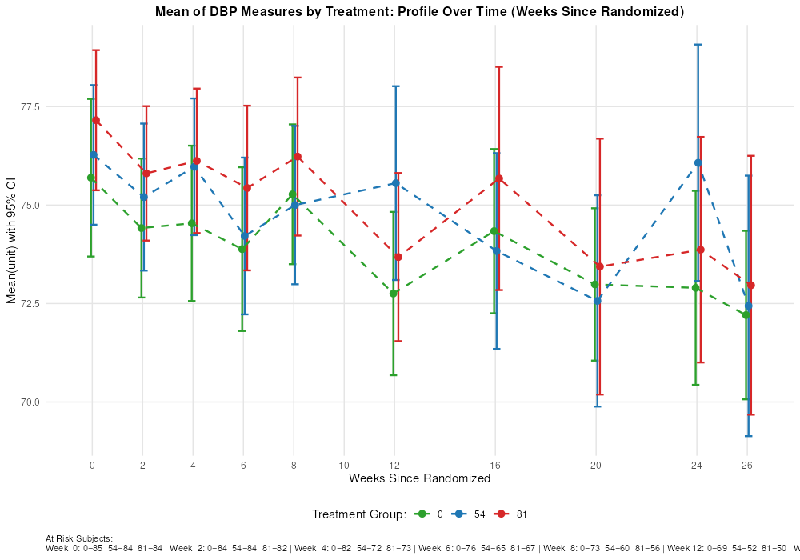

Source: ADVS where PARAMCD=DIABP, ATPTN=815, ANL01FL=Y, SAFFL=Y, AVISITN<99
Figure: ClinicalHandout_DbpProfile.png

| TRTPN | AVISITN | AVISIT | N | Mean | Lo | Hi |
|---|---|---|---|---|---|---|
| 0 | 0 | Baseline | 85 | 75.69 | 73.69 | 77.69 |
| 0 | 2 | Week 2 | 84 | 74.42 | 72.65 | 76.18 |
| 0 | 4 | Week 4 | 82 | 74.54 | 72.56 | 76.51 |
| 0 | 6 | Week 6 | 76 | 73.88 | 71.80 | 75.96 |
| 0 | 8 | Week 8 | 73 | 75.27 | 73.50 | 77.05 |
| 0 | 12 | Week 12 | 69 | 72.75 | 70.68 | 74.83 |
| 0 | 16 | Week 16 | 68 | 74.34 | 72.25 | 76.42 |
| 0 | 20 | Week 20 | 66 | 72.98 | 71.05 | 74.92 |
| 0 | 24 | Week 24 | 59 | 72.90 | 70.44 | 75.36 |
| 0 | 26 | Week 26 | 58 | 72.21 | 70.07 | 74.35 |
| 54 | 0 | Baseline | 84 | 76.27 | 74.50 | 78.05 |
| 54 | 2 | Week 2 | 84 | 75.20 | 73.34 | 77.07 |
| 54 | 4 | Week 4 | 72 | 75.97 | 74.24 | 77.71 |
| 54 | 6 | Week 6 | 65 | 74.22 | 72.22 | 76.21 |
| 54 | 8 | Week 8 | 60 | 75.00 | 72.99 | 77.01 |
| 54 | 12 | Week 12 | 52 | 75.56 | 73.10 | 78.02 |
| 54 | 16 | Week 16 | 42 | 73.83 | 71.35 | 76.32 |
| 54 | 20 | Week 20 | 30 | 72.57 | 69.88 | 75.25 |
| 54 | 24 | Week 24 | 27 | 76.07 | 73.07 | 79.08 |
| 54 | 26 | Week 26 | 25 | 72.44 | 69.13 | 75.75 |
| 81 | 0 | Baseline | 84 | 77.15 | 75.38 | 78.93 |
| 81 | 2 | Week 2 | 82 | 75.80 | 74.10 | 77.51 |
| 81 | 4 | Week 4 | 73 | 76.12 | 74.29 | 77.96 |
| 81 | 6 | Week 6 | 67 | 75.43 | 73.34 | 77.52 |
| 81 | 8 | Week 8 | 56 | 76.23 | 74.23 | 78.24 |
| 81 | 12 | Week 12 | 50 | 73.68 | 71.55 | 75.81 |
| 81 | 16 | Week 16 | 37 | 75.68 | 72.84 | 78.51 |
| 81 | 20 | Week 20 | 32 | 73.44 | 70.19 | 76.69 |
| 81 | 24 | Week 24 | 30 | 73.87 | 71.00 | 76.73 |
| 81 | 26 | Week 26 | 28 | 72.96 | 69.68 | 76.25 |
At Risk Subjects shown in figure blockplot.